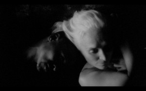

Screen acting - Independent feature films -FULLT-VENTELISTE
- Dato:
- 05.12.2013 til 06.12.2013
- Start kl :
- 10:00
- Slutt kl :
- 16:00
- Pris:
- 700,-
- Adresse:
- Norsk Skuespillersenter, Welhavensgate 1, Oslo
 A two-day workshop for anyone who wants a basic introduction to screen acting for independent feature films.
{kind=link}
Led by Irish film-maker Yvonne McDevitt, this workshop will give you a basic, and applied introduction to acting for film using cutting-edge digital film equipment and technology. Yvonne is currently in pre-production for her next feature film DOVIMA (based on Anton Chekhov's THE SEAGULL), which she will be casting in January.
The workshop will build on the workshop Yvonne did at Skuespillersenteret in June, and is open both for actors who participated last time and for newcomers.
1. How to build good creative relationships with independent filmmakers
2. How to understand exactly what is required of you as an actor for independent films
3. How to prepare yourself for camera
4. How to improvise for camera
5. How to work with other actors on camera
6. How to maximise your potential on film
7. How to get acting work on independent films in Norway, Europe, and internationally
OBS! Workshopen holdes på engelsk.
Yvonne McDevitt read Drama at Trinity College Dublin. After an apprenticeship with American Director Robert Wilson (at the Opera Bastille, Paris), she moved to London and began work as a director in the theatre. Her productions include: Not I, Samuel Beckett (Hermitage Theatre, Moscow) and A Doll’s House, Henrik Ibsen (National Theatre, Norway). She was awarded the Jerwood Young Directors Award (2002) for her production of Exiles by James Joyce (Young Vic Theatre, London). In 2008 she was given an unprecedented award by the Arts Council of England for her seminal production of The Bitter Tears of Petra von Kant, by Rainer Werner Fassbinder (Southwark Playhouse, London). Her first feature film – 2Graves - with original music by Michael Nyman, premiered at the East End Film Festival in London on June 28th. Her second feature film – Ann-Christin’s, Oslo – is currently being edited. Her third film - Horse - has just finished editing in Paris. Her next feature film Dovima is in pre-production. Lofoten Films, based on Skrova, and Bo Sean Murphy Films, based in Ireland, produce her work.
Pris for medlemmer av NSF: 600,-